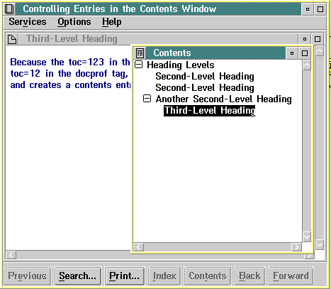

The following example shows some tagging that will control what entries appear in the Contents window, as well as what headings will start windows.
:userdoc. :docprof toc=12. :h1.Heading Levels :h2.Second-Level Heading :p. This window is defined by a heading-level 2 tag. :h2.Second-Level Heading :p. This window also is defined by a heading-level 2 tag. :p. :h3.Third-Level Heading :p. Because the &colon.docprof. tag at the beginning of the file specifies that only heading levels 1 and 2 can be entries in the Contents window (toc=12), the preceding "Third-Level Heading" and THIS text, which follows it, become part of the window defined by the preceding heading-level 2 tag. :h2 toc=123.Another Second-Level Heading :p. The heading-level 2 tag for this window contains a toc=123 specification. :h3.Third-Level Heading :p. Because the toc=123 in the preceding heading-level 2 tag overrides the toc=12 in the &colon.docprof. tag, this heading-level 3 tag defines a new window and creates a Contents entry. :euserdoc.
Unless otherwise specified, the default set of heading tags that create entries in the Contents window and define the start of windows are :h1., :h2., and :h3.. To change this default, specify a numeric sequence with the table of content attribute (toc=) of the :docprof. tag. The :docprof. tag controls the heading levels displayed in the Contents window. The sequence must begin with level 1 and cannot skip a level in the descending hierarchy. For example, the :h4., :h5. and :h6. tags do not start separate windows, but control the appearance of the text of the window unless you specify:
:docprof toc=123456.
To specify that only heading levels 1 and 2 are to define windows and appear as entries in the Contents window, the following tag was used:
:docprof toc=12.
The value specified for the toc= attribute remains in effect for all the heading definitions in the file. You can override it by specifying another value for the toc= attribute in a heading definition. The new value is then in effect for the rest of the headings in the file, or until overridden in another heading definition.
In the preceding example, the toc= attribute of the :docprof. tag is overridden by the toc= attribute of a heading tag.
The next example shows the results of the tagging. Notice the effect of including a heading level that is lower in the hierarchy than the range of heading levels specified with the :docprof. tag.

Contents Window with Displayed Third-Level Heading Window
When the file is viewed, the :h3. title and the text following it are included as part of the window defined by the preceding :h2. tag.